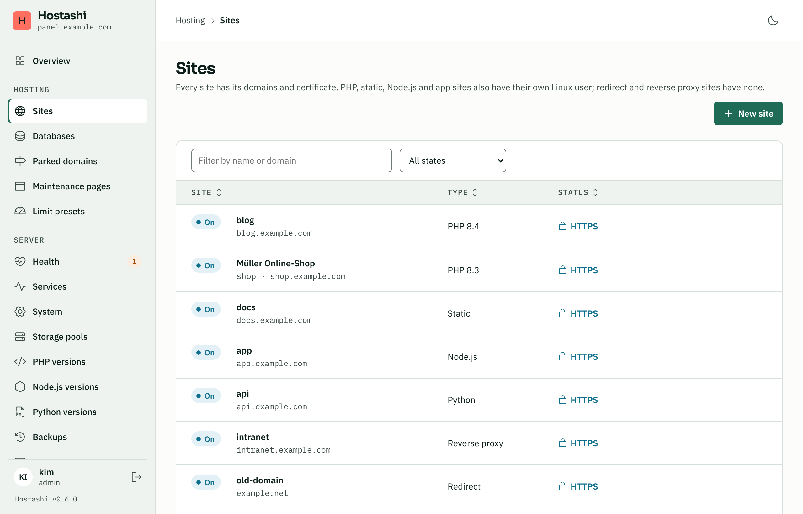
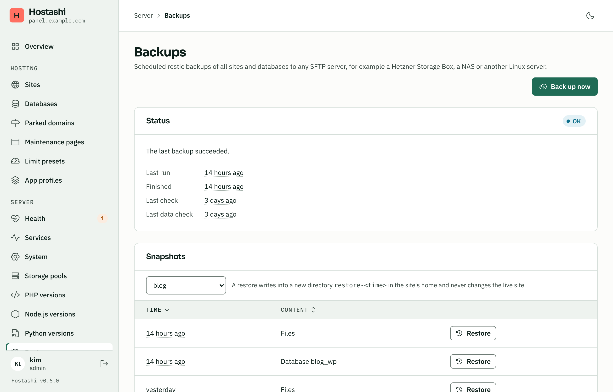
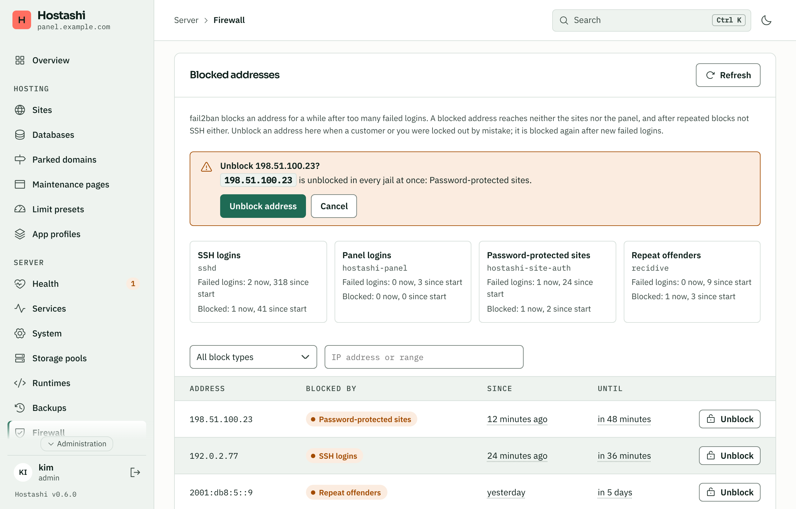

A product of Maki IT · Open source · AGPL-3.0
Hosting panel for your own server¶
Hostashi is a hosting control panel for a single Linux server. It runs PHP, Node.js, Python and static sites on nginx, with HTTPS, databases, backups and Git deploy, and it never needs root in the web process.
curl -fsSLO https://get.hostashi.com/install.sh
sudo bash install.sh --yes --panel-domain panel.example.com

Everything a site needs, nothing it does not¶
Every kind of site¶
PHP in several versions side by side, Node.js, Python, static sites, reverse proxies, redirects and your own apps. WordPress in one step.
HTTPS without thinking¶
Let's Encrypt for every domain, wildcard certificates through your DNS provider, or your own certificate. HSTS and security headers per site.
Databases¶
MariaDB on the server, plus external MariaDB, MySQL and PostgreSQL servers. Size limits, import, export and a database tool in the browser.
Backups you can restore¶
Encrypted restic backups of files and databases to any SFTP server, up to hourly. Restore from the panel; backups of deleted sites stay until you remove them.
Git deploy and staging¶
Push to deploy with a webhook, build commands, atomic releases and rollback. Copy a site to staging and back.
Locked down by default¶
Each site runs as its own Linux user with limits. Firewall, fail2ban, virus scan, passkeys and TOTP, roles and an audit log.
Deploy from Git, roll back in a click¶
Connect a repository from GitHub, GitLab, Gitea, Forgejo or Bitbucket. Every deploy builds in a new release directory and goes live only when the build succeeds. The last releases stay, so going back is one click.

Backups that run while you sleep¶
Choose a schedule and how many daily, weekly and monthly snapshots to keep. Restic encrypts every snapshot, and the panel warns you when a backup is overdue.

See who knocks, and let the right ones in¶
The firewall rolls back changes you do not confirm, so you cannot lock yourself out. fail2ban bans are listed in the panel, and you can lift one without a shell.

Made for¶
- Agencies and freelancers who host their clients' sites on their own servers.
- Admins who want a panel they can read, audit and change.
- Anyone moving from CloudPanel: Hostashi scans the old server, copies sites and databases, and syncs once more before you switch DNS.
Not made for¶
- Mail or DNS servers: use a mail provider and your registrar's DNS.
- Billing, resellers or many servers from one panel.
- Servers that already host websites: Hostashi installs on a fresh one.
Try it on a fresh server¶
One script installs everything, and the panel greets you with a setup page.
Hostashi is built and maintained by Maki IT, which uses it on its own servers.